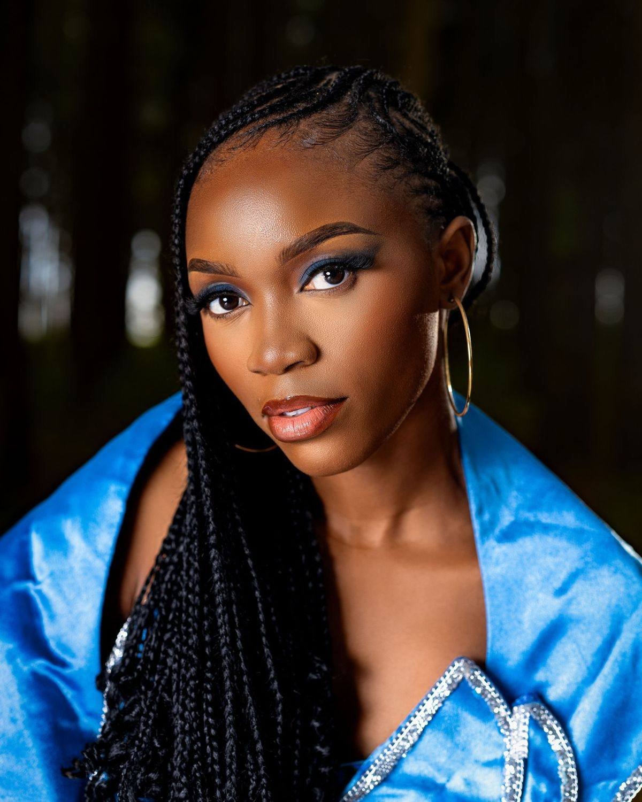
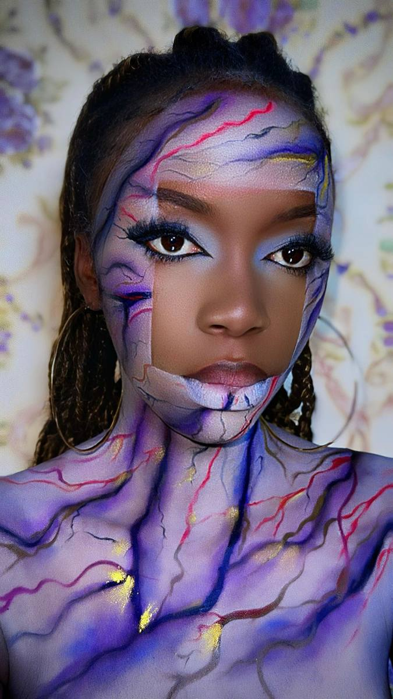
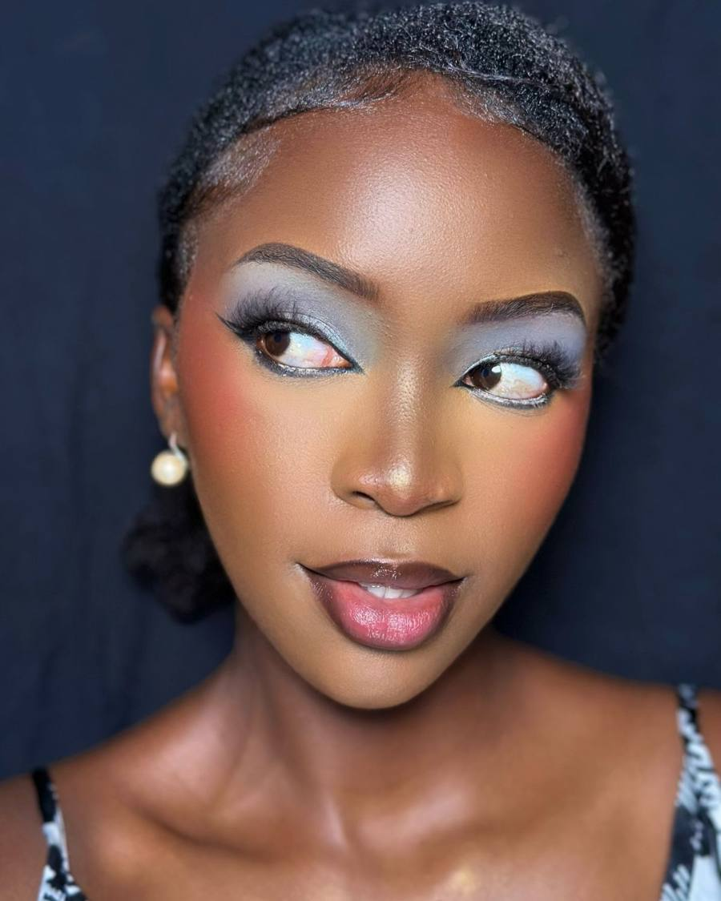
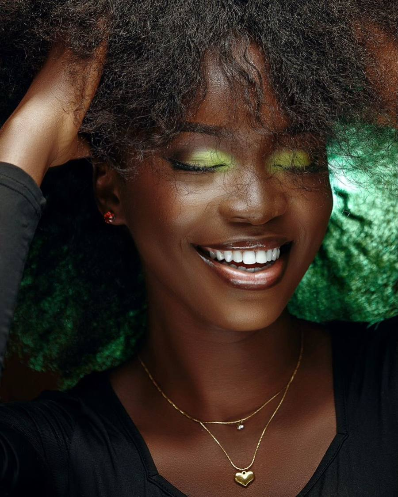
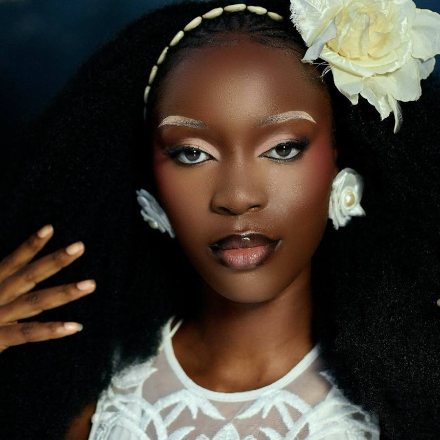
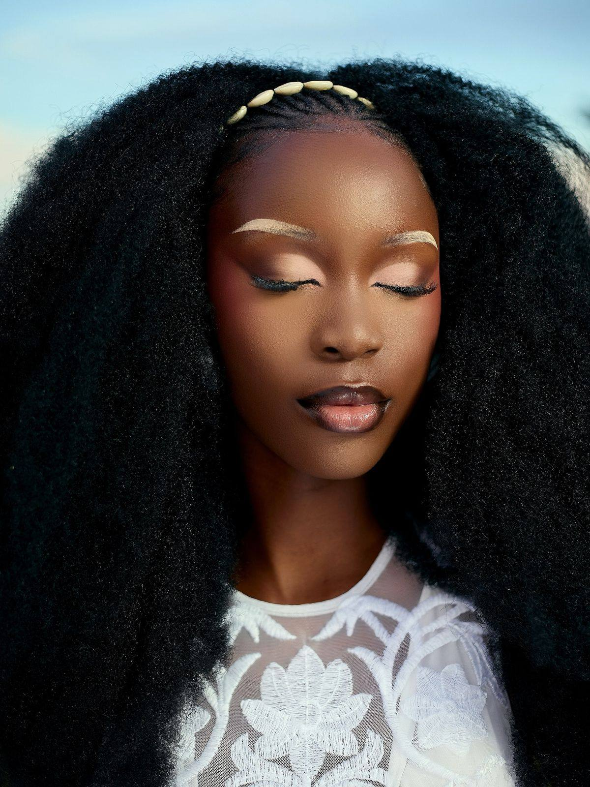

« Je ne maquille pas que des visages, je révèle des univers. »
Des looks qui assument : teints lumineux qui subliment la peau noire, regards graphiques, couleurs franches. Chaque détail est pensé pour la photo, la caméra et la vraie vie.

MUA @sylviaa_grace_ · MODÈLE @miss_aanneFais glisser pour parcourir ses looks. Touche une photo pour la voir en grand et réserver le même style.

01Ta prestation, ta date et ton heure, en ligne, en moins d'une minute.

02Elle te répond sur WhatsApp sous [DÉLAI] pour valider le look, le lieu et l'acompte.

03Le jour J, tu t'installes. Elle s'occupe du reste, des retouches jusqu'à la dernière photo.

Maquilleuse professionnelle à Brazzaville, Sylvia signe ses looks NG Beauty. Son terrain de jeu : la peau noire, qu'elle traite comme une toile de lumière, du soft glam de mariée au maquillage-concept qui fait parler sur Instagram.
Clips « Diesel Gucci feat. Niska » et « Ya Nga Bébé » (Tidiane Mario & Tété Ketch)
A collaboré avecPrince Massen, Oden Photographie, Guyz Statois (photo) · Maybelline Africa

Mariage, anniversaire, tournage ou shooting : bloque ta date avant qu'elle ne parte.